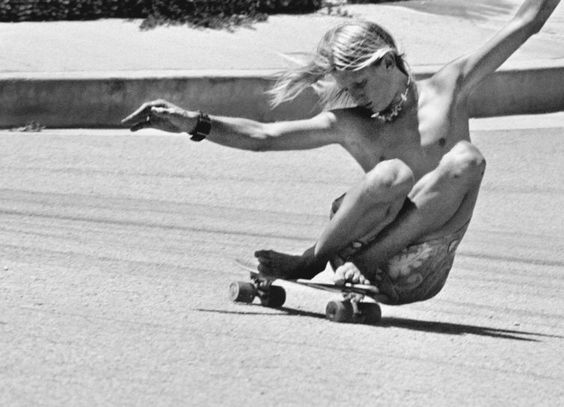
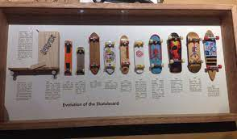
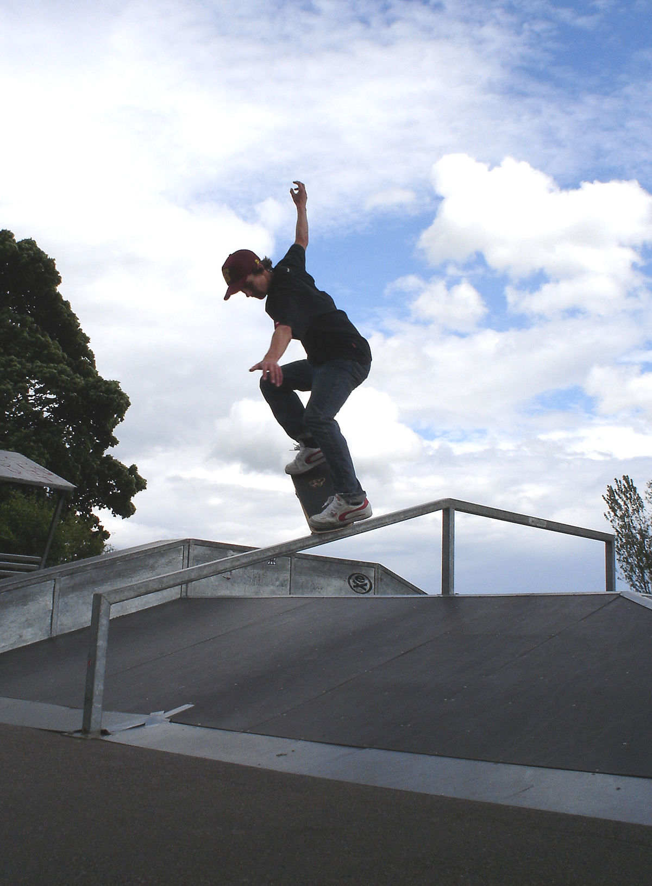

Descubre más sobre el skateboarding en las otras secciones.
ORIGEN
El skateboarding emerge en la década de 1950 en California como una forma de surfear en el pavimento. En las décadas de 1960 y 1970, evoluciona con la mejora de las ruedas y la aparición de trucos. En los años 80, con figuras como Tony Hawk, el skateboarding alcanza gran popularidad a pesar de desafíos y prohibiciones en materia de lo legal. Tony Hawk, destacado skater profesional, se convierte en un ícono influyente, contribuyendo significativamente a la difusión y aceptación del skateboarding.
EL PRECURSOR
En la década de 1990, Tony Hawk protagoniza la serie de videojuegos "Tony Hawk's Pro Skater", que se convierte en un fenómeno cultural. Estos juegos desempeñan un papel crucial en la expansión global del interés por el skateboarding, introduciendo a nuevas audiencias en la cultura skater.
EL SKATEBOARDING EN LA ACTUALIDAD
En el siglo XXI, el skateboarding se oficializa en los Juegos Olímpicos, destacando su crecimiento como una forma de expresión y cultura. Tony Hawk continúa siendo una figura influyente y su legado se mantiene enraizado en la historia del skateboarding, tanto en el mundo físico como en el virtual.

Crecimiento Global:
El skateboarding experimentó un crecimiento significativo a nivel mundial. Países de diferentes continentes vieron un aumento en la popularidad del skate, contribuyendo a la diversificación de estilos y comunidades.

Street Skateboarding:
La práctica del street skateboarding, que implica realizar trucos en entornos urbanos como escaleras, barandas y bancos, se consolidó como una modalidad central en la cultura skater. La creatividad y la expresión personal se convirtieron en aspectos clave de esta disciplina.

Tribus Urbanas y Estilos Diversos:
Surgieron diversas tribus urbanas dentro de la comunidad skater, cada una con su estilo único y enfoque particular. Desde los "street skaters" que se centran en entornos urbanos hasta los "vert skaters" que prefieren rampas y piscinas vacías, la diversidad de estilos se volvió más evidente.